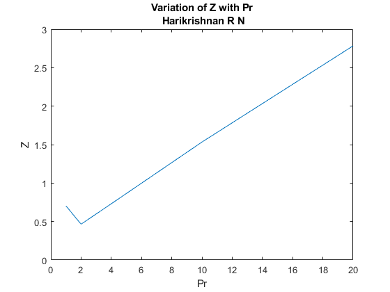

Question 1, Harikrishnan R N, 18CHE147
Here I will show how to solve question 1 of the assignment by solving the cubic equation of van der waal EOS
Contents
Defining Constants
Here we define the constants, physical constants of components:
%Enter the Parameters Below : P_atm = 56; % Pressure in atm units P = P_atm*101325; % Pressure in Pa units T = 450; % Temperature in K units Tc = 405.5; % Critical Temperature in K units Pc_atm = 111.3; % Critical Pressure in atm units Pc = Pc_atm*101325; % Critical Pressure in Pa units R = 8.3144621; % Universal Gas constans J/gmol-K % Defining the Van der waal parameters a and b below : a = (27/64)*R*R*Tc*Tc/Pc ; b = (1/8)*R*Tc/Pc;
Finding the molar volume (First bit) :
Here we will see how th molar Volume is found:
p = [P -(R*T + P*b) a -a*b]; V = roots(p) ; disp([ '1. ','The Molar Volume of Gas is = ', num2str(max(V)),' m^3/gmol']); disp([ ' ','The Compressibility factor of Gas is = ', num2str(P*max(V)/R/T)]);
1. The Molar Volume of Gas is = 0.00057487 m^3/gmol The Compressibility factor of Gas is = 0.87183
Solving for the Second Bit:
Pr = [1 2 4 10 20] ; for i = Pr P_i = Pc*i ; p = [P_i -(R*T + P_i*b) a -a*b]; V = roots(p) ; disp([ '2. ','The Molar Volume of Gas is = ', num2str(max(real(V))),' m^3/gmol',' for Pr =', num2str(i)]); disp([ ' ','The Compressibility factor of Gas is = ', num2str(P_i*max(real(V))/R/T)]); end
2. The Molar Volume of Gas is = 0.0002335 m^3/gmol for Pr =1 The Compressibility factor of Gas is = 0.70381 2. The Molar Volume of Gas is = 7.7265e-05 m^3/gmol for Pr =2 The Compressibility factor of Gas is = 0.46578 2. The Molar Volume of Gas is = 6.0652e-05 m^3/gmol for Pr =4 The Compressibility factor of Gas is = 0.73126 2. The Molar Volume of Gas is = 5.0874e-05 m^3/gmol for Pr =10 The Compressibility factor of Gas is = 1.5334 2. The Molar Volume of Gas is = 4.6174e-05 m^3/gmol for Pr =20 The Compressibility factor of Gas is = 2.7835
Solving for the Third bit :
To show variation of compressibility factor with Pr, we can plot them :
Z_all = zeros(size(Pr)); j = 1; for i = Pr P_i = Pc*i ; p = [P_i -(R*T + P_i*b) a -a*b]; V = roots(p) ; Z_all(j) = P_i*max(real((V)))/R/T; j =j + 1; end disp( "3. Program will print the plot..." ); plot(Pr, Z_all); title([" Variation of Z with Pr " ; " Harikrishnan R N"]); xlabel( " Pr ") ; ylabel(" Z ") ;
3. Program will print the plot...